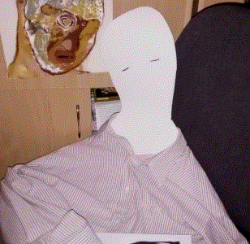

omotopopo:
is a generative audio-visual project fusing experimental music, sound art, and 3D worlds. Built on custom systems and spontaneous processes, it playfully sidesteps conventions. The result is a series of unstable compositions that resist clarity, leaning into failure, noise, and unresolved form.
| Contact: |
<omotopopo()protonmail()com> |
<()91bdcc:matrix.org> |
Sound:
| - omotopopo soundcloud: | https://soundcloud.com/omotopopo |
| - 111family - EZMVA: | https://soundcloud.com/111family/sets/ezm111va |
| - EXILES x AM 01:09:69 JUN-05-1970: | https://soundcloud.com/exiles-electronics/omotopopo |
| - Képeshang #38: omotopopo & Eszelős meszelős: | https://soundcloud.com/falusag/kepeshang-38-omotopopo-eszelos-meszelos |
| - Fú-Fausto Mercier x omotopopo: | https://faustomercier.bandcamp.com/album/f-2 |
| - dióbél Spr-17 / omotopopo: udo ive: | https://diobelkiado.hu/index.php?spr=17&lang=hun |
AV:
| - Bűz II (részlet): | https://vimeo.com/1066377912 |
| - 241202_00_0001_5358: | https://vimeo.com/1058306105 |
| - 0105-06-30: | https://vimeo.com/900284494 |
| - ➫➫➫: | https://www.youtube.com/watch?v=_jNRs1sqfM4&ab_channel=omotopopo |
| - ✰ ✰ ✰ ☾ ✰ ✰ ✰ pt. II: | https://www.youtube.com/watch?v=PKK7ToqWJzg&ab_channel=omotopopo |